Настройка почты Gmail в Outlook 2013, 2016 – Наши инструкции
5-6 минут
Настройка Outlook начинается с настроек Gmail.
Сначала нужно проверить, включен ли протокол IMAP, по которому будет работать почтовый клиент. Этот протокол позволит не только получать письма, но и синхронизировать папки с письмами между Outlook и Gmail.
1. Откройте почту Gmail - http://gmail.com.
2. В правом верхнем углу нажмите на значок шестерёнки и выберите Настройки.
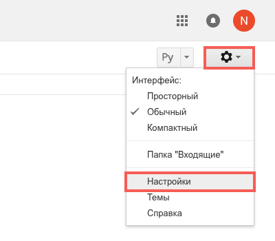
3. Выберите вкладку Пересылка и POP/IMAP и пункт Включить IMAP.
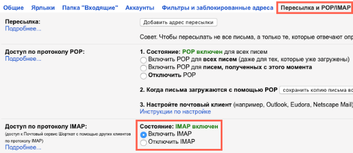
Затем потребуется проверить, включена ли поддержка таких почтовых клиентов, как Outlook. Эта опция появилась относительно недавно.
Дело в том, что Google считает такие почтовые клиенты небезопасными, так как Outlook каждый раз для проверки почты или синхронизации папок будет использовать ваш пароль, а не единовременную аутентификацию, как в приложении Mail для OS X. Впрочем, этот вопрос решается включением двухфакторной аутентификации, когда для Outlook создается отдельный пароль, отличный от вашего пароля Google.
1. Нажмите на иконку приложений в правом верхнем углу и выберите Аккаунт.
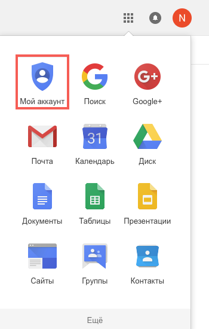
2. В разделе Безопасность и вход выберите Связанные приложения и сайты.
Или пройдите по ссылке - https://myaccount.google.com/lesssecureapps
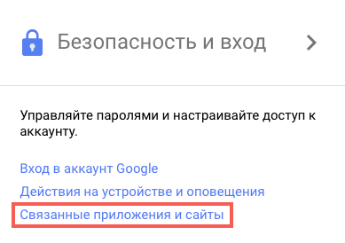
3. Прокрутите страницу вниз, если требуется, и передвиньте переключатель напротив Ненадежные приложения разрешены так, чтобы он стал синего цвета. На всякий случай, после этого рекомендуется перезагрузить страницу и проверить переключатель еще раз.
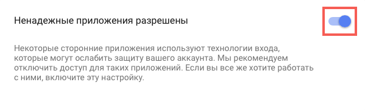
Теперь можно настраивать Outlook.
1. Откройте Outlook. Если приложение запускается впервые под учетной записью на компьютере - перейдите к пункту номер 5.
2. Нажмите Файл.
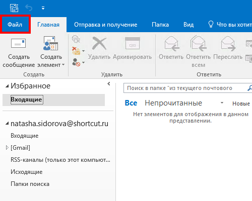
3. Выберите Настройка учетных записей.
4. В окне Настройка учетных записей нажмите Создать.
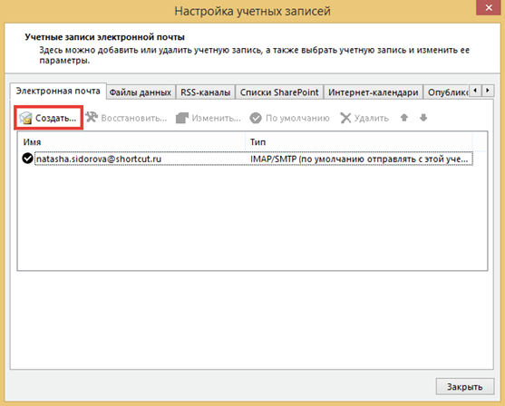
5. В окне Добавить учетную запись выберите пункт Ручная настройка или дополнительные типы серверов и нажмите Далее.
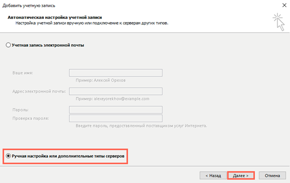
6. Выберите пункт Протокол POP и IMAP и нажмите Далее.
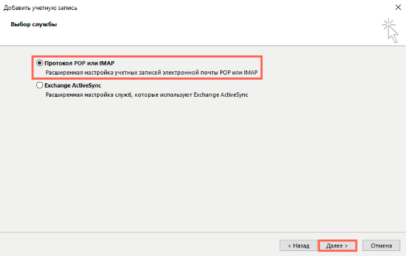
7. Укажите следующие данные и нажмите кнопку Другие настройки...
Сведения о пользователе
Введите имя - так ваши имя и фамилия будут отображаться у получателя
Адрес электронной почты - адрес вашей почты Gmail
Сведения о сервере
Тип учетной записи - IMAP
Сервер входящей почты - imap.gmail.com
Сервер исходящей почты (SMTP) - smtp.gmail.com
Вход в систему
Пользователь - адрес вашей почты Gmail
Пароль - пароль от вашей почты Gmail
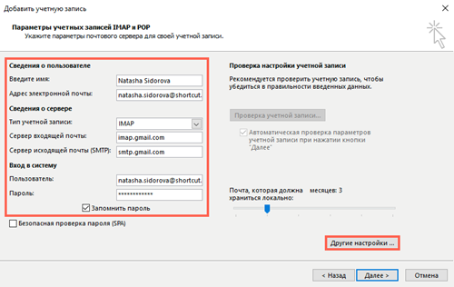
8. В окне Параметры интернет-почты выберите вкладку Сервер исходящей почты, поставьте галочку напротив SMTP-серверу требуется проверка подлинности и выберите пункт Аналогично серверу для входящей почты.
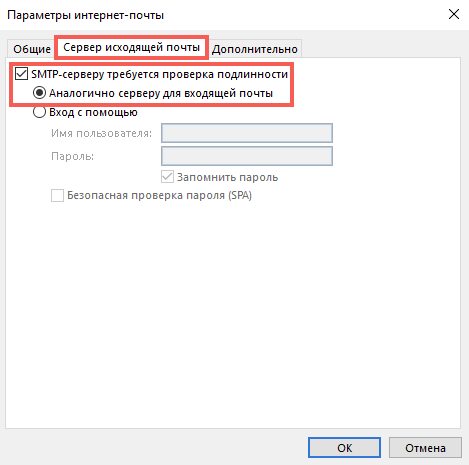
9. В том же окне выберите вкладку Дополнительно, укажите следующие данные и нажмите ОК.
Номера портов сервера
IMAP-сервер - сначала укажите тип шифрованного подключения - SSL, а затем порт - 993
SMTP-сервер - сначала укажите тип шифрованного подключения - SSL, а затем порт - 465
Отправленные элементы
Поставьте галочку напротив - Не сохранять копии отправленных элементов
Это нужно для того, чтобы Outlook не дублировал Отправленные письма. Дело в том, что Outlook сначала отправляет письмо, а потом перемещает Копию в Отправленные. Но так как он делает это с небольшим интервалом - сервер Google опережает его и сам помещает Отправленное письмо в соответствующую папку, а уже затем и "видит" копию, которую после него создал Outlook.
Если же у вас проблемы с синхронизацией Отправленных - не ставьте ту галочку.
Удаленные элементы
Поставьте галочку напротив Удалять элементы при переключении папок в интернете - сообщения, которые были помечены на удаление (те, которые становятся зачеркнутыми) будут автоматически перемещены в Корзину при следующей синхронизации Outlook, по умолчанию она происходит раз в 30 минут. Обратите внимание, что минимальный интервал для синхронизации Outlook с почтой по протоколу IMAP - 10-15 минут, уменьшение этого интервала может привести к неполадкам.
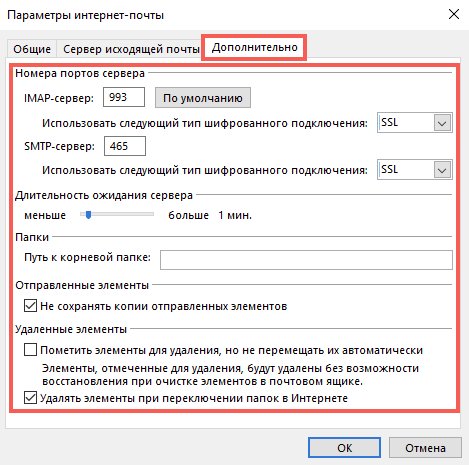
10. Укажите, за какой период должна загружаться почта в Outlook, и нажмите Далее. Чем меньше почты будет загружаться в Outlook, тем быстрее и надежнее он будет работать.
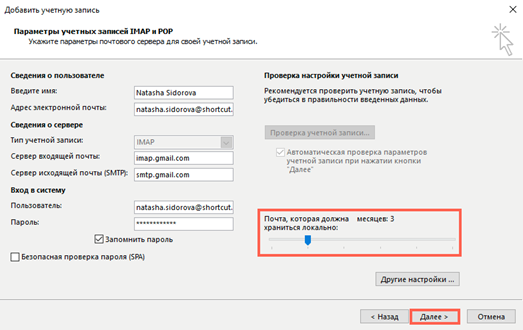
11. Дождитесь окончания проверки почты и нажмите Закрыть. Если во время проверки были ошибки - проверьте правильность ввода логина и пароля от почты. Как вариант, откройте почту с другого браузера или компьютера, выйдите из почтового ящика и войдите вновь.
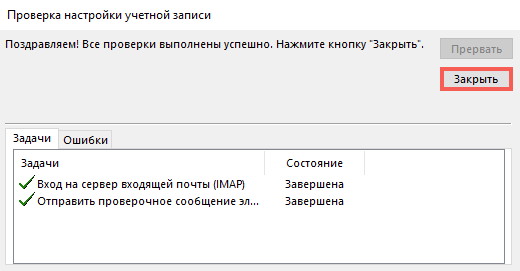
12. Нажмите Готово.
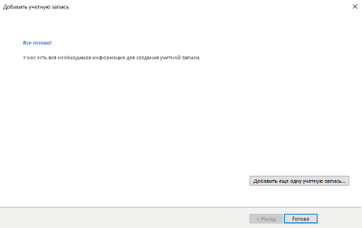
Важно!
- обратите внимание, что письма не появятся сразу же. Сначала Outlook будет загружать заголовки писем, а потом уже письма полностью.
- поиск также не заработает сразу, надо будет дождаться, пока Outlook проиндексирует содержимое всех писем.
- если у вас очень много почты - Outlook может не загрузить их все сразу за раз. Это обусловлено тем, что Gmail устанавливает лимиты на загрузку и выгрузку почты, до 2500 МБ в день. В этом случае рекомендуется закрывать Outlook на ночь и открывать клиент на следующий день.